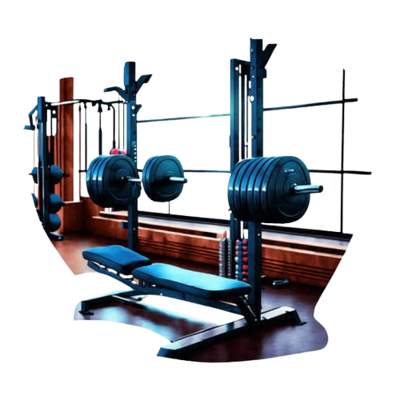

If you are looking for a better place to change your Body and soul, Then ONE.PIECE.GYM is the best place to start with...

The fitness world is changing rapidly, but one principle remains the same:
consistent and intelligent training produces better long-term results than extreme workouts.
Modern fitness approaches increasingly focus on strength, cardiovascular fitness, mobility, recovery, and sustainable lifestyle habits.
Instead of measuring success only by how much weight you can lift or how quickly you can lose weight, fitness should be about becoming stronger,
healthier, and more confident over time.
One of the most important habits is beginning every workout with an appropriate warm-up and preparing your body for the exercises ahead.
Training with proper form and controlled movement is more important than simply lifting heavier weights. Gradually increasing resistance, repetitions,
or training difficulty can help you make progress while avoiding unnecessary strain. Strength training and cardio can also complement each other, supporting muscle strength,
cardiovascular fitness, and overall physical health.
Recovery is another essential part of successful training. Your body needs adequate rest, nutrition, hydration, and sleep to recover from exercise.
Training every day at maximum intensity is not automatically better; a well-planned routine should include appropriate recovery so that you can
return to training with energy and focus.
Recent fitness advice also emphasizes gradually increasing workout intensity after a break rather than immediately returning to previous loads.
Many gym members make the mistake of believing that heavier weights and harder workouts always mean faster results. Poor exercise technique,
lifting beyond your current ability,
rushing through repetitions, ignoring pain, and copying advanced workouts without understanding them can increase the risk of injury. Inadequate technical execution and poor load control
are recognized contributors to exercise-related injuries.
Another common mistake is following unrealistic diets or relying too heavily on unverified supplements for quick results. Fitness goals should be supported by balanced nutrition and a training program
appropriate for the individual. Social-media challenges and extreme fitness trends may look impressive, but they should not replace sensible, sustainable training principles.
Fitness trends in 2026 are increasingly moving toward smarter, more personalized training. Technology, wearable devices, digital workout programs,
and data-based training can help people
monitor their progress and adjust their routines. At the same time, fundamental principles such as strength training, mobility, balance, cardiovascular exercise, and recovery remain important.
The biggest lesson for every gym member is simple: do not train just to look fit—train to become healthier and stronger. Set realistic goals, follow proper techniques, listen to your body, and stay consistent.
Progress may not happen overnight, but disciplined training and healthy habits can create meaningful results over time.
Gym News section is designed to keep members informed about fitness trends, workout techniques, nutrition awareness, recovery tips, gym safety, and healthy lifestyle practices.
We believe that the best fitness journey is built on knowledge as much as motivation. Train smart, respect your body, stay consistent, and make every workout a step toward a stronger and healthier future.